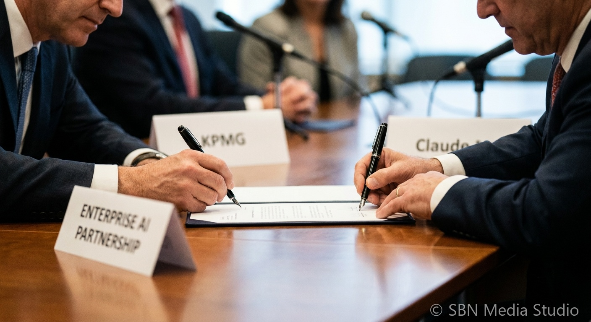

KPMG Deploys Claude to 276,000 Employees in Global Anthropic Alliance

KPMG and Anthropic on May 19, 2026 announced a global alliance that puts Claude in the hands of KPMG's 276,000-person workforce and launches a new client product, KPMG Digital Gateway Powered by Claude. According to KPMG's press release and Anthropic's announcement, the alliance turns a two-year US pilot inside KPMG's Advisory and AI & Data Labs into a Big Four–scale standardization on a single frontier model vendor.
The Digital Gateway sits on KPMG's existing AI platform and lets clients build agentic workflows in real time, with an initial focus on tax clients and private equity firms. KPMG in the US becomes a preferred consultant for deploying Anthropic capabilities into PE portfolio companies, and is bundling a new offering, KPMG Blaze, that embeds Claude Code to accelerate IT modernization and shorten development cycles. Joint KPMG–Anthropic teams will also use Claude to find and fix vulnerabilities in clients' critical systems.
The deal lands inside a remarkable run for Anthropic's enterprise book. The company said Q1 2026 revenue and usage grew 80x year-over-year on an annualized basis, ahead of an internal 10x plan, and is layering on top of fresh deals with PwC on May 14 — also Claude-anchored — and a $200M partnership with the Gates Foundation on May 13. For the consulting industry, the KPMG move sets a clear template: pick a model partner, retrain hundreds of thousands of consultants on it, and resell that integration as a client platform. For OpenAI and Google, it is a sharper reminder that the meaningful enterprise battle is not just about model quality but about which lab the largest professional services firms standardize on.
Sources
KPMG (press release, May 19, 2026), Anthropic (anthropic.com/news/anthropic-kpmg), International Tax Review, CPA Practice Advisor, PR Newswire